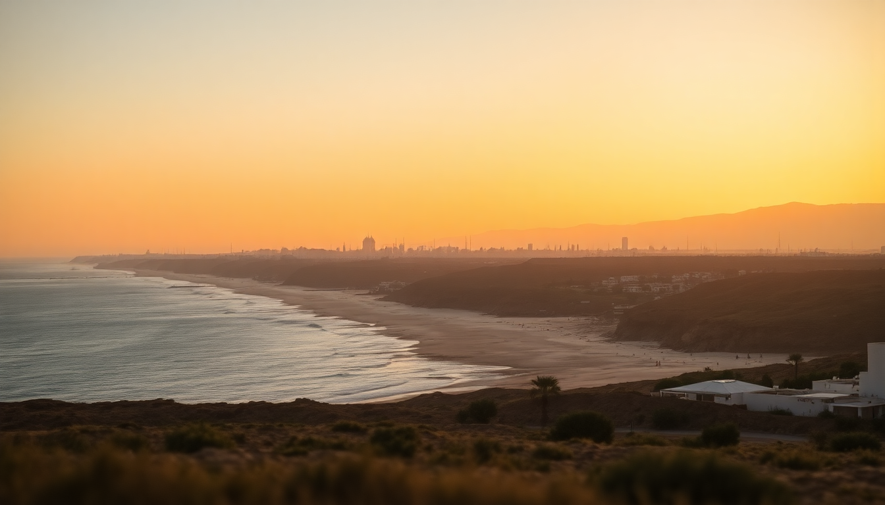

Best Beaches in Morocco: Atlantic Coast & Mediterranean Guide

I spent three weeks driving Morocco’s coast last spring, from the windy Atlantic surf towns up to the calmer Mediterranean coves. What I found surprised me: a beach scene that’s less about lounging and more about real, gritty, often windy beauty. If you’re planning a trip and want to know which stretches of sand are actually worth the towel, here’s what I learned.
What makes Essaouira’s beaches different from other Atlantic spots?
Essaouira’s main beach, Plage d’Essaouira, is a long, wide stretch of sand that runs south from the medina walls. The wind here is relentless—locals call it “the city of wind” for a reason. Kite surfers and windsurfers love it, but if you want calm water, skip this beach entirely. I walked north toward Plage de Safi (about 20 minutes by foot) and found quieter patches where the gusts were less punishing.
- Plage d’Essaouira: Great for people-watching and camel rides, but bring a windbreaker.
- Plage de Sidi Kaouki: 25 km south, a mellow surf spot with a few cafés. We ate grilled sardines at Chez Fatima right on the sand.
- Bordj el Berod: A ruined fortress north of town with a tiny cove. Hard to find, but the water is calmer.
For lunch, skip the touristy stalls near the port. Walk to La Table by Madada (near the medina) for a seafood tagine that actually has flavor. Stay at Hotel Madada Mogador if you want a riad with ocean views—it’s worth the splurge.
Is Agadir just a package-holiday beach, or is there more to it?
Agadir’s main beach, Plage d’Agadir, is a 10 km crescent of golden sand lined with hotels and beach clubs. It’s clean, well-maintained, and packed with families. I found it a bit sterile—think lounge chairs and umbrella rentals every 50 meters. But the water is swimmable year-round, which is rare on the Atlantic coast.
- Plage d’Agadir: Best for swimming and sunbathing. We rented chairs from Le Spot beach club for 50 dirhams.
- Taghazout: 20 km north, a former fishing village turned surf town. The vibe is younger, more bohemian. Try Munga’s Surf Camp for a lesson.
- Plage Tamraght: Between Agadir and Taghazout, a quieter beach with good beginner waves. The Tamraght Surf Hostel runs affordable group sessions.
Dinner tip: skip the hotel buffets. Head to Le Jardin d’Eau in the city center for grilled fish and mint tea in a garden courtyard. For accommodation, Hotel Riu Palace Tikida is solid if you want a resort, but I preferred Dar Josephine, a small guesthouse in the old Talborjt district.
How does Tangier’s beach scene compare to the rest of Morocco?
Tangier’s beaches are split between the Atlantic and the Mediterranean, and the difference is stark. Plage de Tangier (also called Plage Municipale) is the main city beach—crowded, a bit grimy, and often littered. I’d skip it unless you’re desperate for a quick dip. Instead, head west to the Atlantic side.
- Plage Achakkar: 15 km west, a wild beach with dramatic cliffs. The water is cold but clear. We had it almost to ourselves on a Tuesday.
- Plage de Sidi Kacem: Smaller, with a few seafood shacks. The Restaurant Le Detroit serves whole grilled fish for 80 dirhams.
- Cap Spartel: The point where the Atlantic meets the Mediterranean. No swimming (dangerous currents), but the sunset views are worth the drive.
For a place to stay, Hotel El Minzah in the medina is old-world charm with a pool. We ate at Le Saveur du Poisson—no menu, just whatever the catch is that day. Bring cash.
What makes Asilah’s beaches worth a detour?
Asilah is a small, whitewashed town with a relaxed artsy vibe. The beaches here are cleaner and less developed than Tangier’s. Plage de la Ville (town beach) is the main one—calm, shallow water, and a long stretch of sand that’s perfect for families. I spent an afternoon reading under a parasol rented from Club Asilah for 30 dirhams.
- Plage de la Ville: Sheltered from the wind, good for swimming. Walk east toward the Port of Asilah for fewer crowds.
- Plage de Sidi M’barek: 5 km south, a quiet cove with no facilities. Bring your own water and snacks.
- Plage de Rmilat: 8 km north, accessible via a dirt road. We saw wild horses on the dunes—surreal.
Stay at Dar El Manara, a small riad a block from the beach. For dinner, Restaurant Al Alba serves a mean paella (Moroccan-Spanish fusion) on a rooftop terrace. Don’t leave without buying a painting from one of the street artists near the medina walls.
When is the best time to visit Morocco’s beaches?
The coast has two distinct seasons. Summer (June to September) is hot and dry, with water temperatures around 22°C (72°F) on the Mediterranean and 20°C (68°F) on the Atlantic. Crowds peak in August, especially in Agadir. I visited in April and found the weather perfect—warm enough for swimming in Tangier, but empty beaches in Essaouira.
- April-May: Best for empty beaches and mild weather. Water is cool but swimmable.
- June-September: Peak season, especially in Agadir. Book accommodation at least a month ahead.
- October-November: Good for surf (waves pick up) and lower prices. Expect some rain.
- December-March: Cold water and strong winds. Only for die-hard surfers or beach walks.
Which beaches are overrated and which are hidden gems?
I’ll be blunt: Plage de Legzira (south of Agadir) is overrated. The famous red rock arches collapsed in 2016, and the beach is now a dusty stretch with a few broken rocks. Skip it. Instead, head to Plage d’Imiouadar, 40 km south of Essaouira—a crescent of white sand with almost no tourists.
- Overrated: Plage de Legzira (collapsed arches), Plage de Tangier (too crowded), Plage d’Agadir (sterile).
- Hidden gems: Plage d’Imiouadar (empty), Plage Achakkar (wild cliffs), Plage de Sidi M’barek (quiet cove).
- Best for surf: Taghazout and Tamraght—consistent waves year-round.
- Best for swimming: Plage de la Ville in Asilah and Plage d’Agadir (calm water).
FAQ
Are Morocco’s beaches safe for swimming? Most are, but pay attention to flags. The Atlantic coast has strong rip currents, especially near Essaouira and Tangier. Stick to lifeguard-patrolled beaches—Plage d’Agadir and Plage de la Ville in Asilah are safest. Never swim alone at remote beaches like Plage Achakkar.
Can I surf without a wetsuit in Morocco? In summer (June-September), yes—water temps hit 22°C. But from October to May, the Atlantic is cold (15-18°C). I wore a 3/2mm wetsuit in April and was comfortable. Rent gear at Surf Maroc in Taghazout or Munga’s in Tamraght.
What’s the best way to get between these beach towns? Rent a car—it’s the only way to reach remote coves. We used Sixt from Marrakech airport (book online to avoid scams). Buses (CTM and Supratours) connect Tangier, Asilah, and Essaouira, but they don’t stop at beaches. Trains run from Tangier to Asilah (1 hour, 40 dirhams) but skip the coast.
Conclusion
- Essaouira is for wind and surf—skip the main beach, walk to Sidi Kaouki for calm water.
- Agadir is a solid family beach—use it as a base to explore Taghazout and Tamraght for better vibes.
- Tangier’s city beach is a letdown—drive to Plage Achakkar or Cap Spartel instead.
- Asilah is the sleeper hit—clean water, art scene, and uncrowded sand.
- Visit in April or October for good weather without peak-season prices.